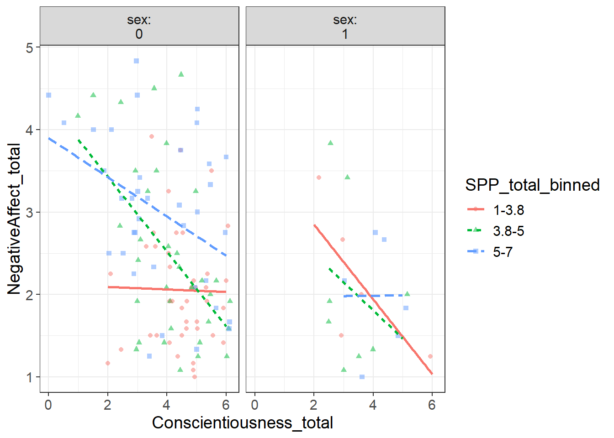

library(tidyverse)── Attaching core tidyverse packages ──────────────────────── tidyverse 2.0.0 ──
✔ dplyr 1.1.4 ✔ readr 2.1.5
✔ forcats 1.0.0 ✔ stringr 1.5.1
✔ ggplot2 3.5.1 ✔ tibble 3.2.1
✔ lubridate 1.9.4 ✔ tidyr 1.3.1
✔ purrr 1.0.2
── Conflicts ────────────────────────────────────────── tidyverse_conflicts() ──
✖ dplyr::filter() masks stats::filter()
✖ dplyr::lag() masks stats::lag()
ℹ Use the conflicted package (<http://conflicted.r-lib.org/>) to force all conflicts to become errorslibrary(dplyr)
library(haven)
library(visualize)
library(flexplot)
Attaching package: 'flexplot'
The following object is masked from 'package:ggplot2':
flip_data#importing sav file
data <- read_sav("PSYR6003.A2.sav")
view(data)
#recoding sex as a factor variable, 0=female, 1=male
data1 <- data %>% mutate(sex = factor(sex, levels = c("Female", "Male"), labels = c(0, 1)))
view(data1)
# Total missing values
sum(is.na(data1)) [1] 6# Removes rows with any missing values
data2 <- na.omit(data1)
view(data2)
#new dataset called data3 containing the Reverse coding for tipm.CONS2.3y
data3 <- data2 %>% mutate(tipm.CONS2.3y = 6 - tipm.CONS2.3y)
View(data3)
#calculating Subscale total means for socially prescribed perfectionism, conscientiousness, and negative affect.
data4 <- data3 %>% mutate(SPP_total = rowMeans(select(., mps.SPP1.3y, mps.SPP2.3y, mps.SPP3.3y, mps.SPP4.3y, mps.SPP5.3y), na.rm = TRUE),Conscientiousness_total = rowMeans(select(., tipm.CONS1.3y, tipm.CONS2.3y), na.rm = TRUE),NegativeAffect_total = rowMeans(select(., guilt1.3y, guilt2.3y, guilt3.3y, dep1.3y, dep2.3y, dep3.3y,fear1.3y, fear2.3y, fear3.3y, host1.3y, host2.3y, host3.3y), na.rm = TRUE))
view(data4)
#computing sex count for female and male.
sex_counts <- data3 %>%count(sex)
print(sex_counts)# A tibble: 2 × 2
sex n
<fct> <int>
1 0 112
2 1 19# Computing means and standard deviations for NegativeAffect,SPP,sex and conscientiousness
summary_stats <- data4 %>% select(SPP_total, Conscientiousness_total, NegativeAffect_total, sex) %>% summarise(Mean_SPP = mean(SPP_total, na.rm = TRUE),SD_SPP = sd(SPP_total, na.rm = TRUE),Min_SPP = min(SPP_total, na.rm = TRUE),Max_SPP = max(SPP_total, na.rm = TRUE),Mean_Conscientiousness = mean(Conscientiousness_total, na.rm = TRUE),SD_Conscientiousness = sd(Conscientiousness_total, na.rm = TRUE),Min_Conscientiousness = min(Conscientiousness_total, na.rm = TRUE),Max_Conscientiousness = max(Conscientiousness_total, na.rm = TRUE),Mean_NegativeAffect = mean(NegativeAffect_total, na.rm = TRUE),SD_NegativeAffect = sd(NegativeAffect_total, na.rm = TRUE),Min_NegativeAffect = min(NegativeAffect_total, na.rm = TRUE),Max_NegativeAffect = max(NegativeAffect_total, na.rm = TRUE),Mean_Sex = mean(as.numeric(sex), na.rm = TRUE), SD_Sex = sd(as.numeric(sex), na.rm = TRUE),Min_Sex = min(as.numeric(sex), na.rm = TRUE),Max_Sex = max(as.numeric(sex), na.rm = TRUE))
View(summary_stats)
#computing mean and standard deviation for Negative Affect, SPP and Conscientiousness by genger, male and female.
summary_stats2 <- data4%>% select(SPP_total, Conscientiousness_total, NegativeAffect_total, sex) %>%
group_by(sex) %>% summarise(
Mean_SPP = mean(SPP_total, na.rm = TRUE),
SD_SPP = sd(SPP_total, na.rm = TRUE),
Min_SPP = min(SPP_total, na.rm = TRUE),
Max_SPP = max(SPP_total, na.rm = TRUE),
Mean_Conscientiousness = mean(Conscientiousness_total, na.rm = TRUE),
SD_Conscientiousness = sd(Conscientiousness_total, na.rm = TRUE),
Min_Conscientiousness = min(Conscientiousness_total, na.rm = TRUE),
Max_Conscientiousness = max(Conscientiousness_total, na.rm = TRUE),
Mean_NegativeAffect = mean(NegativeAffect_total, na.rm = TRUE),
SD_NegativeAffect = sd(NegativeAffect_total, na.rm = TRUE),
Min_NegativeAffect = min(NegativeAffect_total, na.rm = TRUE),
Max_NegativeAffect = max(NegativeAffect_total, na.rm = TRUE)
)
view(summary_stats2)
#visualizing the univariate distribution.
flexplot(NegativeAffect_total~1, data=data4)flexplot(sex~1, data=data4)flexplot(Conscientiousness_total~1, data=data4)flexplot(SPP_total~1, data=data4)#visualizing bivariate distribution
flexplot(NegativeAffect_total~SPP_total , data = data4)flexplot(NegativeAffect_total~Conscientiousness_total , data = data4)flexplot(NegativeAffect_total~sex , data = data4)#visualizing multivaraite distribution
flexplot(NegativeAffect_total~Conscientiousness_total+SPP_total+sex, data=data4,method="lm")flexplot(NegativeAffect_total~Conscientiousness_total+SPP_total|sex, data=data4,method="lm")
#running the model
model <- lm(NegativeAffect_total~ sex+Conscientiousness_total + SPP_total , data = data4)
#visualizing the model
visualize(model, plot="residuals")# residuals extraction and performing the Shapiro-Wilk test
residuals <- residuals(model)
shapiro.test(residuals)
Shapiro-Wilk normality test
data: residuals
W = 0.98146, p-value = 0.07071#running the full model for hypothesis 1
full <- lm(NegativeAffect_total~Conscientiousness_total+SPP_total+sex, data=data4)
#running reduced model for the first hypothesis
reduced<- lm(NegativeAffect_total~1, data=data4)
#Comparing full and reduced Model
model.comparison(reduced, full)$statistics
aic bic bayes.factor p rsq adj.rsq
reduced 368.293 374.043 0.0 <2e-16 0.000 0.000
full 333.257 347.633 543039.5 0.269 0.252
$predicted_differences
0% 25% 50% 75% 100%
0.006 0.162 0.331 0.545 1.483 #estimates stats
estimates(full)Note: You didn't choose to plot Conscientiousness_total so I am inputting the mean
Note: You didn't choose to plot SPP_total so I am inputting the meanModel R squared:
0.269 (0.14, 0.4)
Semi-Partial R squared:
Conscientiousness_total SPP_total sex
0.140 0.087 0.043
Estimates for Factors:
variables levels estimate lower upper
1 sex 0 2.52 2.37 2.68
2 1 1.95 1.56 2.33
Mean Differences:
variables comparison difference lower upper cohens.d
1 sex 1-0 -0.58 -1.16 0.01 -0.68
Estimates for Numeric Variables =
variables estimate lower upper std.estimate std.lower std.upper
1 (Intercept) 2.67 1.93 3.41 0.00 0.00 0.00
2 Conscientiousness_total -0.26 -0.37 -0.14 -0.34 -0.49 -0.19
3 SPP_total 0.20 0.10 0.31 0.30 0.14 0.45##Summary Stats
summary(model)
Call:
lm(formula = NegativeAffect_total ~ sex + Conscientiousness_total +
SPP_total, data = data4)
Residuals:
Min 1Q Median 3Q Max
-1.6989 -0.5926 -0.1454 0.5276 2.2597
Coefficients:
Estimate Std. Error t value Pr(>|t|)
(Intercept) 2.67129 0.37919 7.045 1.05e-10 ***
sex1 -0.57578 0.21146 -2.723 0.007381 **
Conscientiousness_total -0.25746 0.05937 -4.337 2.92e-05 ***
SPP_total 0.20323 0.05310 3.828 0.000202 ***
---
Signif. codes: 0 '***' 0.001 '**' 0.01 '*' 0.05 '.' 0.1 ' ' 1
Residual standard error: 0.844 on 127 degrees of freedom
Multiple R-squared: 0.2689, Adjusted R-squared: 0.2517
F-statistic: 15.57 on 3 and 127 DF, p-value: 1.1e-08#run full model for hypothesis 2
full <- lm(NegativeAffect_total~Conscientiousness_total+SPP_total+sex, data=data4)
#run reduced model for hypothesis 2 where sex and conscientiousness is controlled.
reduced<- lm(NegativeAffect_total~sex+Conscientiousness_total, data=data4)
#Comparing full and reduced Model
model.comparison(reduced, full)$statistics
aic bic bayes.factor p rsq adj.rsq
reduced 345.559 357.060 0.009 <2e-16 0.185 0.172
full 333.257 347.633 111.432 0.269 0.252
$predicted_differences
0% 25% 50% 75% 100%
0.007 0.073 0.230 0.357 0.644 #estimates stats
estimates(full)Note: You didn't choose to plot Conscientiousness_total so I am inputting the mean
Note: You didn't choose to plot SPP_total so I am inputting the meanModel R squared:
0.269 (0.14, 0.4)
Semi-Partial R squared:
Conscientiousness_total SPP_total sex
0.140 0.087 0.043
Estimates for Factors:
variables levels estimate lower upper
1 sex 0 2.52 2.37 2.68
2 1 1.95 1.56 2.33
Mean Differences:
variables comparison difference lower upper cohens.d
1 sex 1-0 -0.58 -1.16 0.01 -0.68
Estimates for Numeric Variables =
variables estimate lower upper std.estimate std.lower std.upper
1 (Intercept) 2.67 1.93 3.41 0.00 0.00 0.00
2 Conscientiousness_total -0.26 -0.37 -0.14 -0.34 -0.49 -0.19
3 SPP_total 0.20 0.10 0.31 0.30 0.14 0.45##Summary Stats
summary(model)
Call:
lm(formula = NegativeAffect_total ~ sex + Conscientiousness_total +
SPP_total, data = data4)
Residuals:
Min 1Q Median 3Q Max
-1.6989 -0.5926 -0.1454 0.5276 2.2597
Coefficients:
Estimate Std. Error t value Pr(>|t|)
(Intercept) 2.67129 0.37919 7.045 1.05e-10 ***
sex1 -0.57578 0.21146 -2.723 0.007381 **
Conscientiousness_total -0.25746 0.05937 -4.337 2.92e-05 ***
SPP_total 0.20323 0.05310 3.828 0.000202 ***
---
Signif. codes: 0 '***' 0.001 '**' 0.01 '*' 0.05 '.' 0.1 ' ' 1
Residual standard error: 0.844 on 127 degrees of freedom
Multiple R-squared: 0.2689, Adjusted R-squared: 0.2517
F-statistic: 15.57 on 3 and 127 DF, p-value: 1.1e-08